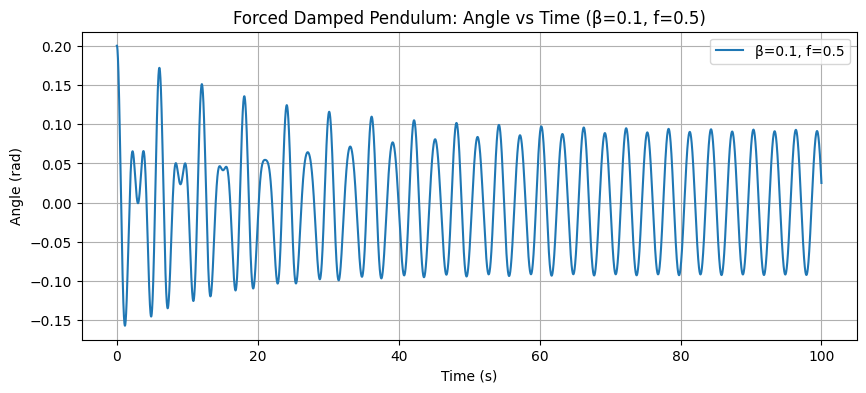
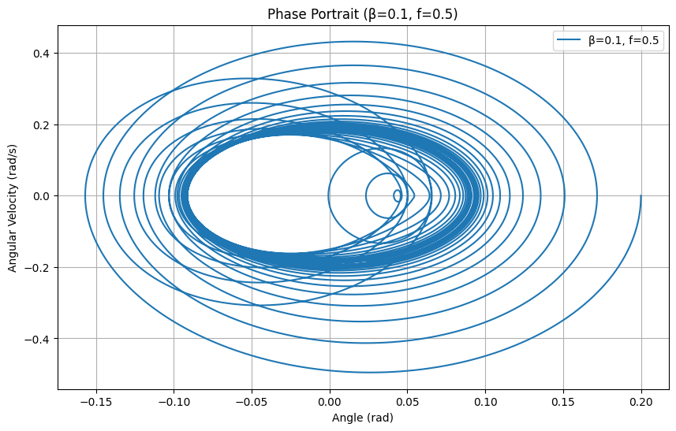
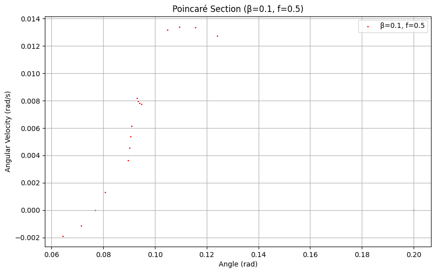

Problem 2
1. Theoretical Foundation
Differential Equation of the Forced Damped Pendulum
The motion of a forced damped pendulum is governed by the following nonlinear differential equation:
Where: $$ - \(\theta\): Angular displacement of the pendulum (radians).
-
\(\frac{d\theta}{dt}\): Angular velocity (\(\dot{\theta}\)).
-
\(\frac{d^2\theta}{dt^2}\): Angular acceleration (\(\ddot{\theta}\)).
-
\(b\): Damping coefficient (s\(^{-1}\)).
-
\(g\): Gravitational acceleration (\(9.8 \, \text{m/s}^2\)).
-
\(L\): Length of the pendulum (m).
-
\(A\): Amplitude of the external driving force (rad/s\(^2\)).
-
\(\omega\): Driving frequency (rad/s).
-
\(t\): Time (s).
To simplify, we define: - Natural frequency: \(\omega_0 = \sqrt{\frac{g}{L}}\), - Damping parameter: \(\beta = b\), - Driving amplitude: \(f = A\). $$ Thus, the equation can be rewritten as:
Small-Angle Approximation
For small angles (\(\theta \ll 1\)), we can approximate \(\sin\theta \approx \theta\). This linearizes the equation:
This is the equation of a forced damped harmonic oscillator. The homogeneous solution (without forcing) is:
Where \(\omega_d = \sqrt{\omega_0^2 - \left(\frac{\beta}{2}\right)^2}\) is the damped angular frequency, and \(A_1\) and \(A_2\) are constants determined by initial conditions.
The particular solution (due to the forcing term \(f \cos(\omega t)\)) can be found using the method of undetermined coefficients. Assume a solution of the form:
Substitute into the linearized equation, solve for \(C\) and \(D\), and the steady-state solution is:
Where the amplitude \(A_d\) and phase \(\phi\) are:
Resonance Conditions
Resonance occurs when the driving frequency \(\omega\) approaches the natural frequency \(\omega_0\). In the linearized case, the amplitude \(A_d\) is maximized when:
At resonance, the system absorbs energy most efficiently from the driving force, leading to large oscillations. Damping (\(\beta\)) limits the amplitude, preventing it from becoming infinite as it would in an undamped system. Resonance increases the system’s energy, which can be beneficial (e.g., in energy harvesting) or destructive (e.g., in mechanical structures like bridges).
2. Analysis of Dynamics
Influence of Parameters
$$ - Damping Coefficient (\(\beta\)): Higher damping reduces the amplitude of oscillations and suppresses resonance. For very large \(\beta\), the system becomes overdamped, and oscillations decay quickly. - Driving Amplitude (\(f\)): Increasing \(f\) increases the amplitude of the steady-state response and can push the system into nonlinear regimes, leading to chaotic behavior. - Driving Frequency (\(\omega\)): When \(\omega \approx \omega_0\), resonance occurs. For \(\omega \gg \omega_0\) or \(\omega \ll \omega_0\), the response amplitude decreases.
Transition to Chaotic Motion
For large driving amplitudes or specific combinations of \(\beta\), \(f\), and \(\omega\), the nonlinear term \(\sin\theta\) becomes significant, and the system can exhibit chaotic behavior. This transition is characterized by:
-
Period Doubling: The pendulum’s motion may double its period repeatedly as \(f\) increases, a hallmark of the route to chaos.
-
Sensitive Dependence on Initial Conditions: Small changes in \(\theta(0)\) or \(\dot{\theta}(0)\) lead to drastically different trajectories.
-
Chaotic Attractors: The system’s phase space shows a strange attractor, visible in phase portraits and Poincaré sections.
3. Practical Applications
The forced damped pendulum model applies to: - Energy Harvesting: Piezoelectric devices can use forced oscillations to convert mechanical energy into electrical energy.
-
Suspension Bridges: Understanding resonance helps design bridges to avoid catastrophic oscillations (e.g., Tacoma Narrows Bridge collapse).
-
Oscillating Circuits: Driven RLC circuits behave analogously, with applications in electronics and signal processing.
-
Discussion Limitations
The model assumes a constant driving frequency and amplitude, which may not hold in real systems with time-varying forces. Nonlinear damping (e.g., velocity-squared damping) is not considered. The simulation uses a fixed time step, which may introduce numerical errors for highly chaotic regimes.
  